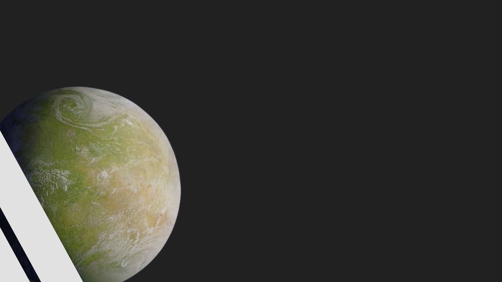
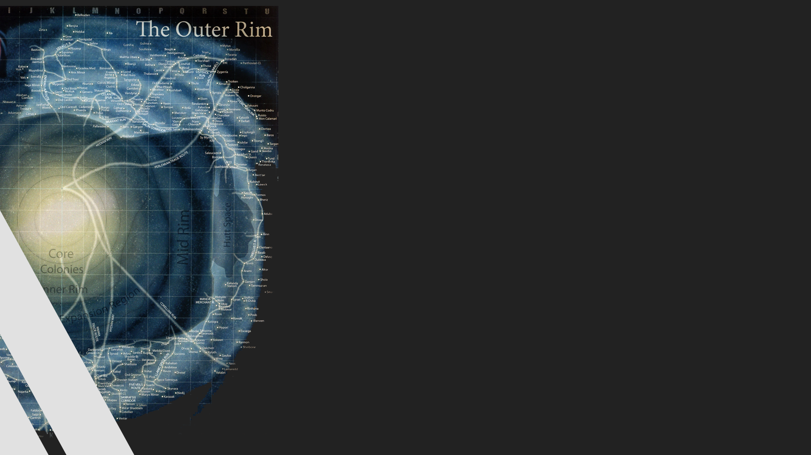
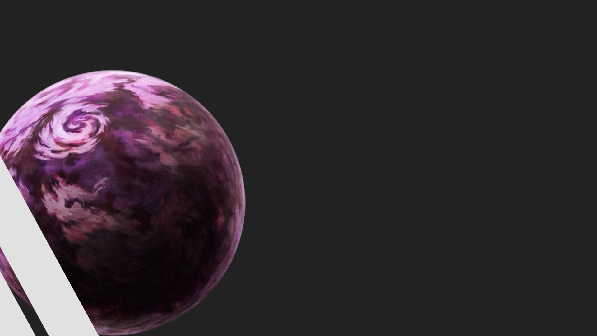

nova republica
nova republica
O que é?
foi o nome do governo galáctico estabelecido pela Aliança Rebelde para restaurar a República Galáctica para substituir o Império Galáctico após a Batalha de Endor. Dado ínicio em 5 ABY, depois que a dissolução da Aliança anterior de planetas livres (que foi dado forma diretamente após a batalha de Endor como um governo intermediário), ele era se transformar a autoridade governamental suprema da galáxia. A República “nova” era uma continuação da República Galáctica original, que se tornou a República velha naquele tempo. A Nova República foi fundada na mesma premissa que a República Galáctica velha era mil gerações antes ao manda um corpo parliamentarista representativo para governar a galáxia de justo e igual maneira e ela foi projetada para erradicar os defeitos que causaram a queda da República original. A Nova República era protegida pela Nova Ordem Jedi, que foi estabelecida por Luke Skywalker, relembrando o fato de que a República original era protegida pela Velha Ordem Jedi.
Principais participantes
chandrila
era um planeta nos Mundos do Núcleo da galáxia. A humana do sexo feminino, Mon Mothma veio de Chandrila, e representou o seu planeta no Senado da República Galáctica. Após a Batalha de Endor, Chandrila se tornou a capital da Nova República e sede do Senado Galático recém-formado. Ele não era permanente, a República escolheu rodar o mundo capital em torno de eleições.

orla média
também conhecida como Orla-Média, Sistemas Médios ou Territórios da Orla Média, foi uma região da galáxia que estava localizada entre a Região de Expansão e os Territórios da Orla Exterior. Com menos recursos naturais—portanto, uma população menor—do que muitas regiões vizinhas, a Orla Média era um território em que os seus residentes trabalhavam duro pelo por tudo que eles possuíam. Alguns planetas construíram impressionantes economias, e invasores piratas muitas vezes se escondiam nos espaços relativamente inexplorados longe de rotas comerciais importantes.

Utapau
foi um árido semidouro mundial no Sistema Utapau do Setor Tarabba nos territórios da orla exterior. Utapau foi a terra natal dos Pau'anos e Utais, mais conhecidos com Utapauanos. Estás espécies viveram nos buracos gigantes que estavam espalhados pelo Planeta que tinha uma vegetação fechada.

Orla Exterior
também conhecidos como Orla Exterior ou Sistemas Exteriores, eram uma região esparsamente populada da galáxia localizada fora da Orla Média e antes do Espaço Selvagem e das Regiões Desconhecidas. A maior região da galáxia, a Orla Exterior era o lar de diversos mundos e planetas primitivos.
